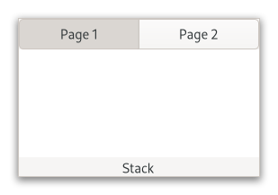

Gtk.Stack¶
Example¶
- Subclasses
None
Methods¶
- Inherited
Gtk.Widget (179), GObject.Object (37), Gtk.Accessible (7), Gtk.Buildable (1)
- Structs
class |
|
|
|
|
|
|
|
|
|
|
|
|
|
|
|
|
|
|
|
|
|
|
|
|
|
|
|
|
|
|
Virtual Methods¶
- Inherited
Properties¶
- Inherited
Name |
Type |
Flags |
Short Description |
|---|---|---|---|
r/w/en |
|||
r/w/en |
|||
r |
|||
r/w/en |
|||
r |
|||
r/w/en |
|||
r/w/en |
|||
r/w/en |
|||
r/w/en |
Signals¶
- Inherited
Fields¶
- Inherited
Class Details¶
- class Gtk.Stack(**kwargs)¶
- Bases
- Abstract
No
GtkStackis a container which only shows one of its children at a time.In contrast to
GtkNotebook,GtkStackdoes not provide a means for users to change the visible child. Instead, a separate widget such as [class`Gtk`.StackSwitcher] or [class`Gtk`.StackSidebar] can be used withGtkStackto provide this functionality.Transitions between pages can be animated as slides or fades. This can be controlled with [method`Gtk`.Stack.set_transition_type]. These animations respect the [property`Gtk`.Settings:gtk-enable-animations] setting.
GtkStackmaintains a [class`Gtk`.StackPage] object for each added child, which holds additional per-child properties. You obtain theGtkStackPagefor a child with [method`Gtk`.Stack.get_page] and you can obtain aGtkSelectionModelcontaining all the pages with [method`Gtk`.Stack.get_pages].To set child-specific properties in a .ui file, create
GtkStackPageobjects explicitly, and set the child widget as a property on it:- ``xml
- <object class=”GtkStack” id=”stack”>
- <child>
- <object class=”GtkStackPage”>
<property name=”name”>page1</property> <property name=”title”>In the beginning…</property> <property name=”child”>
- <object class=”GtkLabel”>
<property name=”label”>It was dark</property>
</object>
</property>
</object>
</child>
- CSS nodes
GtkStackhas a single CSS node named stack.- Accessibility
GtkStackuses theGtk.AccessibleRole.TAB_PANELfor the stack pages, which are the accessible parent objects of the child widgets.- add_child(child)[source]¶
- Parameters
child (
Gtk.Widget) – the widget to add- Returns
the
GtkStackPagefor child- Return type
Adds a child to self.
- add_named(child, name)[source]¶
- Parameters
child (
Gtk.Widget) – the widget to add
- Returns
the
GtkStackPagefor child- Return type
Adds a child to self.
The child is identified by the name.
- add_titled(child, name, title)[source]¶
- Parameters
child (
Gtk.Widget) – the widget to addtitle (
str) – a human-readable title for child
- Returns
the
GtkStackPagefor child- Return type
Adds a child to self.
The child is identified by the name. The title will be used by
GtkStackSwitcherto represent child in a tab bar, so it should be short.
- get_child_by_name(name)[source]¶
- Parameters
name (
str) – the name of the child to find- Returns
the requested child of the
GtkStack- Return type
Gtk.WidgetorNone
Finds the child with the name given as the argument.
Returns
Noneif there is no child with this name.
- get_hhomogeneous()[source]¶
- Returns
whether self is horizontally homogeneous.
- Return type
Gets whether self is horizontally homogeneous.
- get_interpolate_size()[source]¶
-
Returns whether the
GtkStackis set up to interpolate between the sizes of children on page switch.
- get_page(child)[source]¶
- Parameters
child (
Gtk.Widget) – a child of self- Returns
the
GtkStackPagefor child- Return type
Returns the
GtkStackPageobject for child.
- get_pages()[source]¶
- Returns
a
GtkSelectionModelfor the stack’s children- Return type
Returns a
GListModelthat contains the pages of the stack.This can be used to keep an up-to-date view. The model also implements [iface`Gtk`.SelectionModel] and can be used to track and modify the visible page.
- get_transition_duration()[source]¶
- Returns
the transition duration
- Return type
Returns the amount of time (in milliseconds) that transitions between pages in self will take.
- get_transition_running()[source]¶
-
Returns whether the self is currently in a transition from one page to another.
- get_transition_type()[source]¶
- Returns
the current transition type of self
- Return type
Gets the type of animation that will be used for transitions between pages in self.
- get_vhomogeneous()[source]¶
- Returns
whether self is vertically homogeneous.
- Return type
Gets whether self is vertically homogeneous.
- get_visible_child()[source]¶
- Returns
the visible child of the
GtkStack- Return type
Gtk.WidgetorNone
Gets the currently visible child of self.
Returns
Noneif there are no visible children.
- get_visible_child_name()[source]¶
-
Returns the name of the currently visible child of self.
Returns
Noneif there is no visible child.
- remove(child)[source]¶
- Parameters
child (
Gtk.Widget) – the child to remove
Removes a child widget from self.
- set_hhomogeneous(hhomogeneous)[source]¶
-
Sets the
GtkStackto be horizontally homogeneous or not.If it is homogeneous, the
GtkStackwill request the same width for all its children. If it isn’t, the stack may change width when a different child becomes visible.
- set_interpolate_size(interpolate_size)[source]¶
- Parameters
interpolate_size (
bool) – the new value
Sets whether or not self will interpolate its size when changing the visible child.
If the [property`Gtk`.Stack:interpolate-size] property is set to
True, self will interpolate its size between the current one and the one it’ll take after changing the visible child, according to the set transition duration.
- set_transition_duration(duration)[source]¶
- Parameters
duration (
int) – the new duration, in milliseconds
Sets the duration that transitions between pages in self will take.
- set_transition_type(transition)[source]¶
- Parameters
transition (
Gtk.StackTransitionType) – the new transition type
Sets the type of animation that will be used for transitions between pages in self.
Available types include various kinds of fades and slides.
The transition type can be changed without problems at runtime, so it is possible to change the animation based on the page that is about to become current.
- set_vhomogeneous(vhomogeneous)[source]¶
-
Sets the
GtkStackto be vertically homogeneous or not.If it is homogeneous, the
GtkStackwill request the same height for all its children. If it isn’t, the stack may change height when a different child becomes visible.
- set_visible_child(child)[source]¶
- Parameters
child (
Gtk.Widget) – a child of self
Makes child the visible child of self.
If child is different from the currently visible child, the transition between the two will be animated with the current transition type of self.
Note that the child widget has to be visible itself (see [method`Gtk`.Widget.show]) in order to become the visible child of self.
- set_visible_child_full(name, transition)[source]¶
- Parameters
name (
str) – the name of the child to make visibletransition (
Gtk.StackTransitionType) – the transition type to use
Makes the child with the given name visible.
Note that the child widget has to be visible itself (see [method`Gtk`.Widget.show]) in order to become the visible child of self.
- set_visible_child_name(name)[source]¶
- Parameters
name (
str) – the name of the child to make visible
Makes the child with the given name visible.
If child is different from the currently visible child, the transition between the two will be animated with the current transition type of self.
Note that the child widget has to be visible itself (see [method`Gtk`.Widget.show]) in order to become the visible child of self.
Property Details¶
- Gtk.Stack.props.hhomogeneous¶
- Name
hhomogeneous- Type
- Default Value
- Flags
Trueif the stack allocates the same width for all children.
- Gtk.Stack.props.interpolate_size¶
- Name
interpolate-size- Type
- Default Value
- Flags
Whether or not the size should smoothly change during the transition.
- Gtk.Stack.props.pages¶
- Name
pages- Type
- Default Value
- Flags
A selection model with the stack pages.
- Gtk.Stack.props.transition_duration¶
- Name
transition-duration- Type
- Default Value
200- Flags
The animation duration, in milliseconds.
- Gtk.Stack.props.transition_running¶
-
Whether or not the transition is currently running.
- Gtk.Stack.props.transition_type¶
- Name
transition-type- Type
- Default Value
- Flags
The type of animation used to transition.
- Gtk.Stack.props.vhomogeneous¶
- Name
vhomogeneous- Type
- Default Value
- Flags
Trueif the stack allocates the same height for all children.
- Gtk.Stack.props.visible_child¶
- Name
visible-child- Type
- Default Value
- Flags
The widget currently visible in the stack.